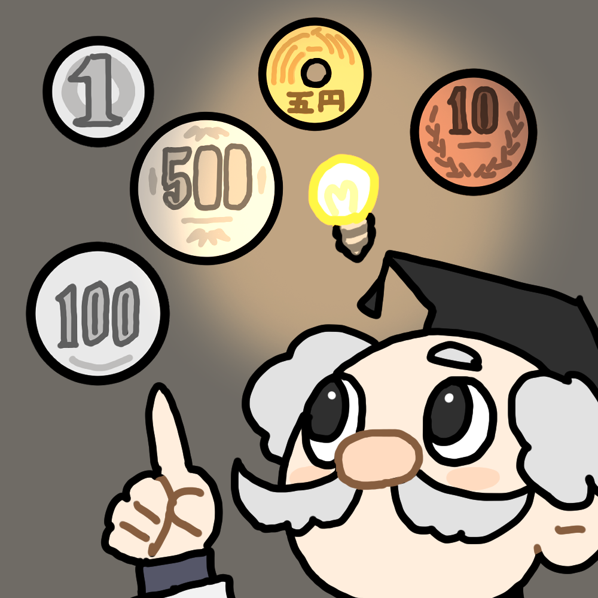

Technical Program Committee Member, IEEE/CVF International Conference on Computer Vision (ICCV 2025) Workshop (HiCV)
Technical Program Committee Member, European Conference on Computer Vision (ECCV 2024) Workshop (HCV)
Organizing Committee, 3rd Joint Symposium of Nagoya Univ. AI-MAILs × Tohoku Univ. ClinicalAI (2023)
Memberships
IEEE Student Member
The Institute of Electronics, Information and Communication Engineers (IEICE) Student Member
Works
recolLe (Web & iOS) —
Your own original album that can be viewed simply by holding your smartphone over an acrylic keychain equipped with an NFC tag.
[Web][App Store]

おつりDoctor (iOS) —
Calculate the number and total amount of coins simply by arranging them and taking a picture with the camera.
[App Store]
超kAI像 (iOS) —
Enhance photos up to 4x resolution using AI super-resolution technology. Sharp details with a natural finish.
[App Store]
kikonAshI (iOS) —
Based on photos of clothes taken with an iPhone, a specialized fashion AI suggests optimal outfits.
[App Store]